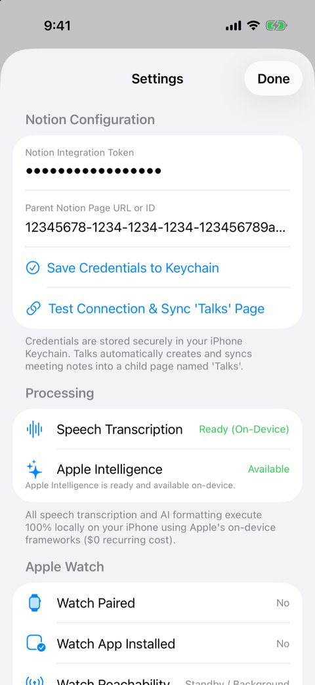

Talks
Record a meeting on Apple Watch. The iPhone transcribes and summarizes it on device and saves the notes to Notion. The engineering work is making that pipeline survive disconnects, app kills, and failed uploads without losing or duplicating anything.
Cases passing in CI on the iOS Simulator. watchOS app built in CI too.
The watch deletes audio only after the iPhone has queued the job.
No cloud speech or AI service. The only network call is to Notion.
Screens



Screenshots use a demo recording. The Notion page ID is a placeholder.
The problem
I wanted to record lectures and research meetings on my watch and get clean notes in Notion, without sending the audio to a cloud AI service.
The hard part is not the Record button. watchOS can suspend the app at any time, Bluetooth drops when you walk away from the phone, iOS kills background work, and Notion uploads can fail halfway. Streaming 90 minutes of audio over Bluetooth also drains the watch battery. Every one of these failures must leave the recording safe and the job resumable.
What I built
Apple Watch iPhone
─────────── ──────
record .m4a to local storage
Stop → WCSession.transferFile ─────▶ save file → write job to queue.json
│
keep the file until ACK ◀──── ACK ─────┘ (transferUserInfo)
▼
transcribe on device
SpeechAnalyzer → SFSpeechRecognizer fallback
▼
structure on device (Foundation Models)
▼
create Notion page → save page ID → append blocks- Watch: records AAC audio locally with an extended runtime session, and has a Screen Off mode for meetings. On Stop, the system transfers the file out of process.
- Queue: the iPhone writes every state change atomically to a JSON job queue. One worker processes jobs, and each job is tried at most once per pass.
- On-device models: SpeechAnalyzer (iOS 26) transcribes, with an on-device SFSpeechRecognizer fallback. Apple Foundation Models write the title, summary, key points, decisions, and action items. Long transcripts are split to fit the model's context window.
- Notion: text is split under the 2,000-character block limit and sent in batches of 100 blocks.
The hard part: two failures I had to design around
The acknowledgement must not depend on both apps being awake
My first version sent the acknowledgement with WCSession.sendMessage. That call needs both apps active and reachable at the same moment, and the watch is usually asleep right after you tap Stop. I moved the acknowledgement to transferUserInfo, which the system queues and delivers later.
Speech recognition can finish and then hang
SpeechAnalyzer sometimes transcribed the audio but never finished. A watchdog now gives each job a deadline of max(30 s, 2 × audio length). On timeout, Talks discards the partial result, transcribes the whole file again with SFSpeechRecognizer, and skips SpeechAnalyzer for the rest of the session.
Key decision: one device always holds the audio
The iPhone sends the acknowledgement only after the job is saved in its queue. The watch deletes its copy only after it receives that acknowledgement. At every moment, at least one device has the recording.
The same thinking applies after a crash. On relaunch, interrupted jobs go back to their last safe state (for example, .transcribing → .received). For Notion, Talks saves the page ID as soon as Notion returns it. A retry counts the blocks already on the page and appends only the missing ones. If it cannot count them completely, it fails and tries later instead of guessing.
Evidence
57 XCTest cases pass in CI on the iOS Simulator (macOS runner). CI also builds the watchOS app on its own.
| Test file | What it covers |
|---|---|
JobQueueTests | Persistence, relaunch recovery, single worker, retry, corrupt-queue recovery, deletion rules |
NotionServiceTests | Page layout, 2,000-character splitting, 429 retry, append-only-missing retry |
TranscriptionTests | Audio checks, chunking, watchdog, fallback, circuit breaker |
ConnectivityAndLaunchTests | Enqueue-before-ACK on iPhone, ACK-gated deletion on Watch, launch |
Limitations
- The simulator cannot pair a watch, record from the watch microphone, or run Apple Intelligence reliably. CI tests the code on each side of those boundaries; end-to-end behavior needs a real iPhone and Apple Watch.
- The full pipeline needs iOS 26 with Apple Intelligence. On other devices, recording and transcription work and the job waits for the model.
- If the app crashes after Notion creates a page but before Talks saves its ID, a retry can create a second page.
- You build and install it from Xcode; it is not on the App Store.
The README has setup steps, a troubleshooting guide for real devices, and the full design notes.
Read the Talks README